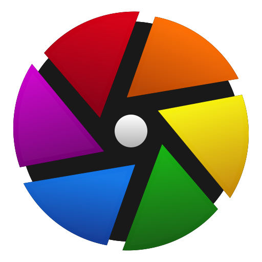
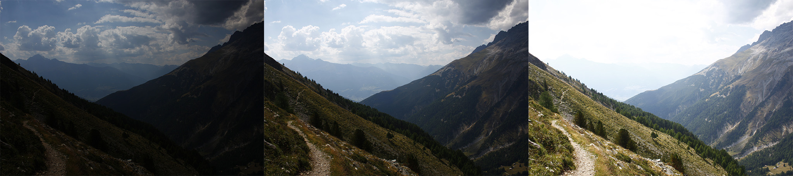
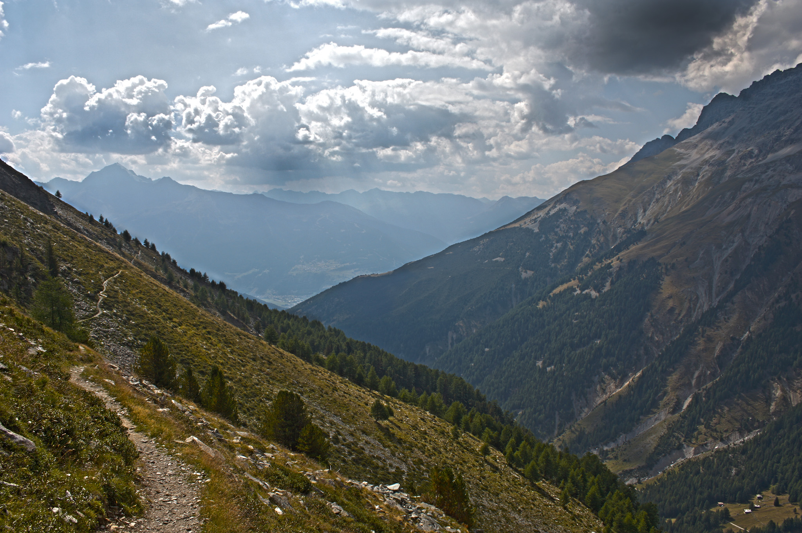
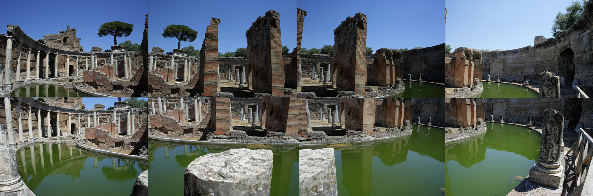
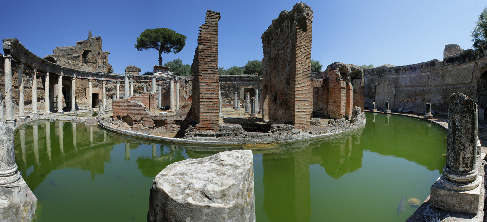

name: dark layout: true class: center, dark --- #Editing Fotografico ##Libreria e post-produzione <br/> ###Niccolò Izzo ```html izzo.niccolo@gmail.com ``` <br/><br/><br/> ###<img src="img/newlogo.svg" alt="POuL Logo" style="height: 4em; margin-top: 1em"> --- #Benvenuti <br/><br/><br/><br/><br/><br/> ###Qui trovate queste slide ```html foto.izzo.ovh ``` <br/><br/><br/><br/><br/><br/><br/> ##Le domande sono gratis! --- name:sign layout:true class:dark .sign[.left[Niccolò Izzo]] .course-right[Corsi Linux Avanzati 2015 - [POuL](https://poul.org)] --- name:argomenti .title[##Stasera impareremo a] <br/><br/></br> -- .text[###Organizzare la libreria fotografica] -- <br/><br/><br/><br/><br/></br> .text[###Gestire la post-produzione] -- <br/><br/><br/><br/><br/></br> .text[###Sviluppare i file RAW] --- .title[##Perchè linux?] -- <br/><br/> .text[###Libertà totale nel gestire le proprie foto.] -- <br/><br/><br/><br/> .text[###Tutto il software é gratuito.] -- <br/><br/><br/><br/> .text[###Strumenti livello professionale.] -- <br/><br/><br/><br/> .text[###Codice open-source.] --- .title[##Hardware] -- <br/> .text[###Necessario un pc con CPU a 64 bit.] -- .text[####con almeno 2GB di memoria RAM.] -- <br/><br/><br/><br/> .text[###Necessario un mouse onesto.] -- .text[####laser e pesante sarebbe meglio!] -- <br/><br/><br/><br/> .text[###Opzionale una tavola grafica.] -- .text[####si trova a 60€ su ebay.] -- <br/><br/><br/><br/> .text[###Consigliata una sonda colorimetrica.] -- .text[####120€ su amazon da dividere con gli amici.] --- .title[##Software] .center[.text[#Darktable]] .center[###] -- .center[.text[####É un software per l'editing e l'archiviazione delle foto.]] -- .center[.text[####La struttura a database permette modifiche reversibili.]] --- .title[##Software] .center[.text[#Gimp]] .center[###] -- .center[.text[####Strumento flessibile per la manipolazione delle immagini.]] -- .center[.text[####Modifiche distruttive, lavorate sempre su una copia delle fostre foto!]] --- .title[##Tipi di file] -- <br/> .text[###JPEG (.jpg/.jpeg)] -- .text[####É il formato più diffuso per la compressione delle foto, la nostra fotocamera salva foto in questo formato (lossy).] -- <br/><br/><br/><br/> .text[###RAW (.cr2/.nef/.pef/.arw)] -- .text[####Contiene i dati grezzi del sensore, non compresso quindi molto ingombrante, ogni marca di reflex ha il suo formato (lossless) .] -- <br/><br/><br/><br/> .text[###XCF (.xcf/.xcfbz2/.xcfgz)] -- .text[####File di salvataggio di GIMP, permette di salvare immagini multi-layer e può essere compresso (lossless).] -- .text[####[Questa guida](http://docs.gimp.org/en/gimp-images-out.html) approfondisce l'esportazione dei file con GIMP.] --- .title[##Partiamo da Darktable] <br/><br/><br/><br/><br/><br/> .center[#DEMO!] --- .title[##Editing] <br/> .center[.text[##Ora un po' di magia manipolativa.]] <br/> .center[###] --- .title[##HDRI] .text[##Acronimo di High Dynamic Range Imaging.] .center[###] .center[###] --- .title[##HDRI] .center[.text[#Darktable]] .center[###] .center[.text[###Useremo darktable]] .center[.text[###per creare le nostre immagini HDR.]] --- .title[##Photomerge] .text[##Permette di unire più fotografie in una sola.] .center[###] .center[###] --- .title[##Photomerge] .center[.text[#Hugin]] .center[####<img src="img/hugin.png" alt="Hugin" style="height: 10em; margin-top: 0em">] .center[.text[###Effettua l'allineamento automatico]] .center[.text[###e la regolazione della luminosità.]] --- .title[##HDRI e Photomerge] <br/><br/><br/><br/><br/><br/> .center[#DEMO!] --- class:center, middle ##Grazie per l'attenzione. <br/><br/><br/> #Fine <br/><br/><br/><br/> ####Queste slides sono distribuite sotto [licenza MIT](http://opensource.org/licenses/MIT). <!-- Nella parte di editing non devono mancare i photomerge e gli HDR, che sono le cose fiche(tm) -->